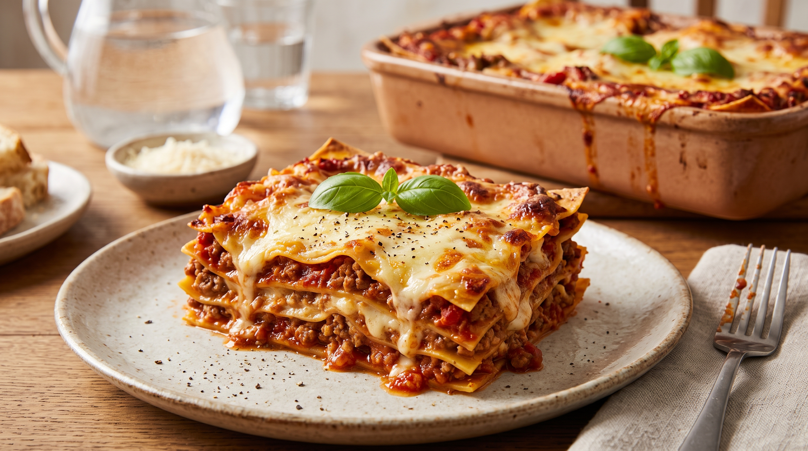

Lasagna

Description
This classic homemade lasagna features rich layers of savory meat sauce,
creamy ricotta cheese, melted mozzarella, and perfectly cooked pasta sheets.
It is a hearty, comforting dish baked to golden, bubbly perfection.
Whether you are preparing a cozy family dinner or cooking for a special occasion,
this traditional Italian recipe is sure to impress. It is easy to assemble
and tastes even better the next day!
Ingredients
- 12 lasagna noodles
- 1 pound (450g) ground beef
- 1 medium onion, chopped
- 2 cloves garlic, minced
- 1 jar (24 oz) marinara or pasta sauce
- 15 oz (425g) ricotta cheese
- 1 large egg
- 3 cups mozzarella cheese, shredded
- 1/2 cup Parmesan cheese, grated
- 1 tablespoon Italian seasoning
- Salt and black pepper to taste
Steps
- Bring a large pot of lightly salted water to a boil and cook the lasagna noodles according to package instructions. Drain and set aside.
- In a large skillet over medium heat, cook the ground beef, chopped onion, and minced garlic until browned. Drain excess fat.
- Stir the marinara sauce and Italian seasoning into the skillet with the meat. Simmer for 10 minutes.
- In a medium bowl, combine the ricotta cheese and the egg until well mixed.
- Preheat your oven to 375°F (190°C).
- Spread a thin layer of meat sauce on the bottom of a baking dish. Lay cooked noodles over the sauce, then spread a layer of the ricotta mixture and sprinkle with mozzarella and Parmesan cheese. Repeat layers.
- Cover the dish with foil and bake for 25 minutes. Remove the foil and bake for an additional 15 minutes until the cheese is melted and bubbly.
- Let the lasagna rest for 10 to 15 minutes before slicing and serving.
Home